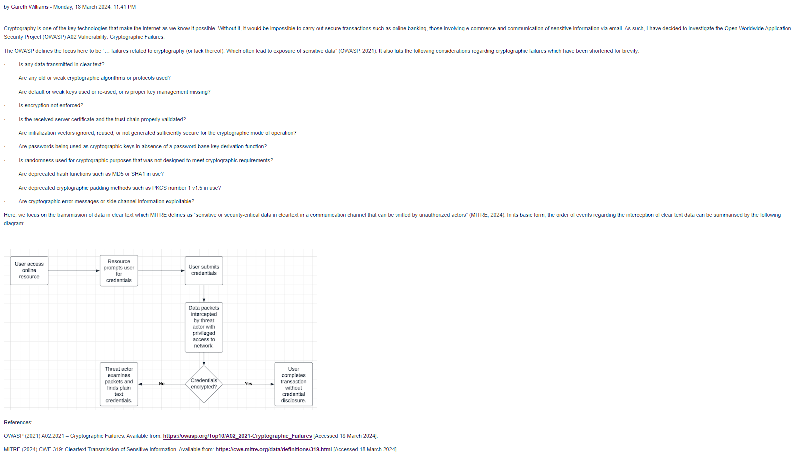
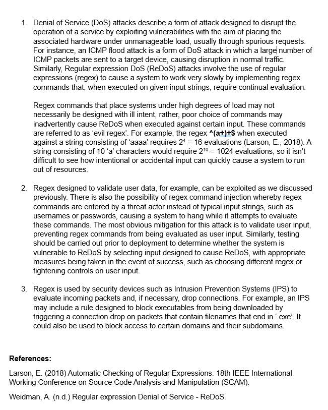
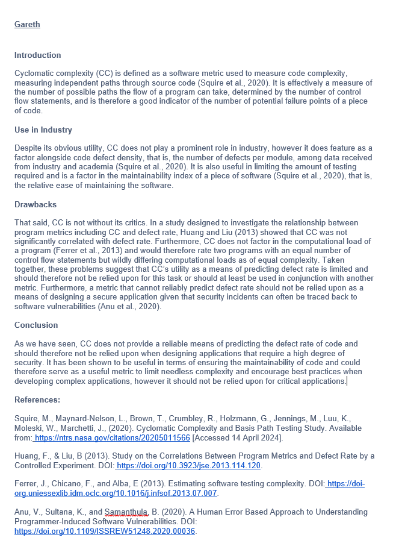
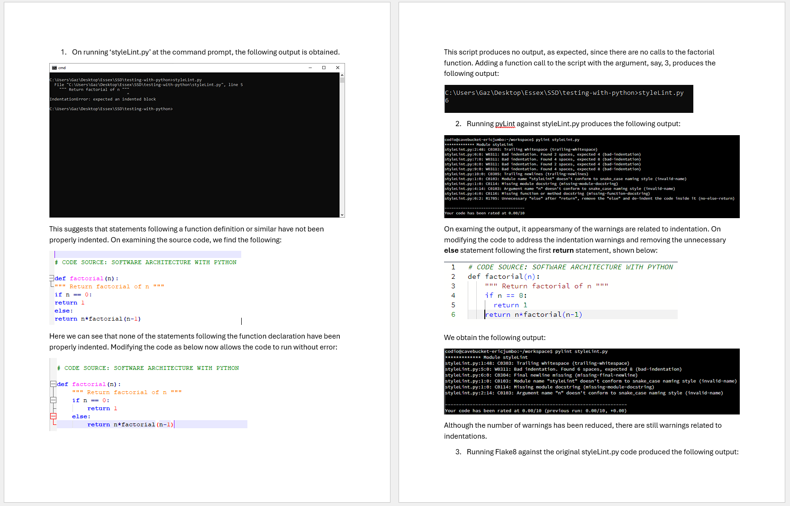
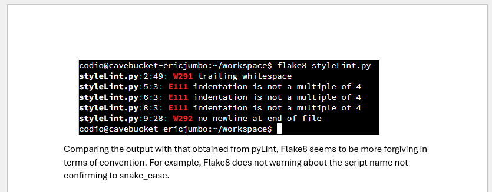
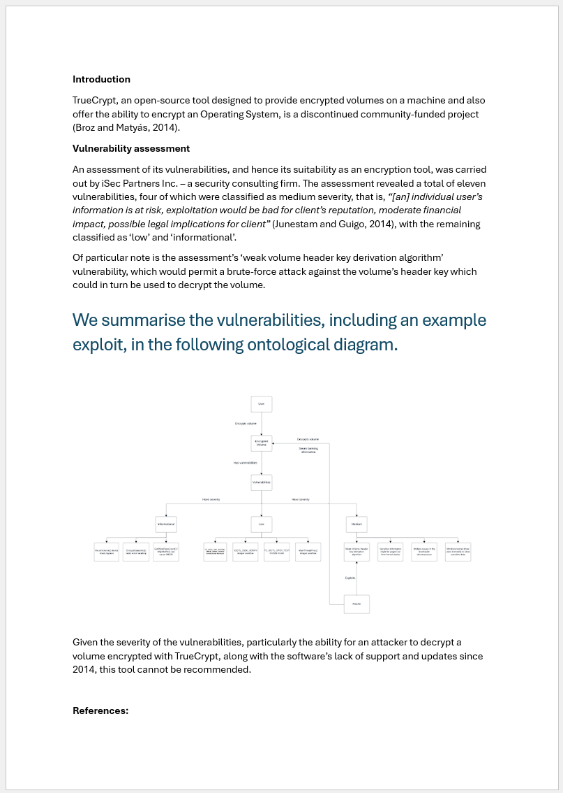
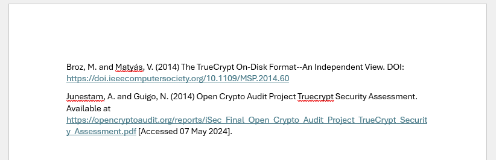
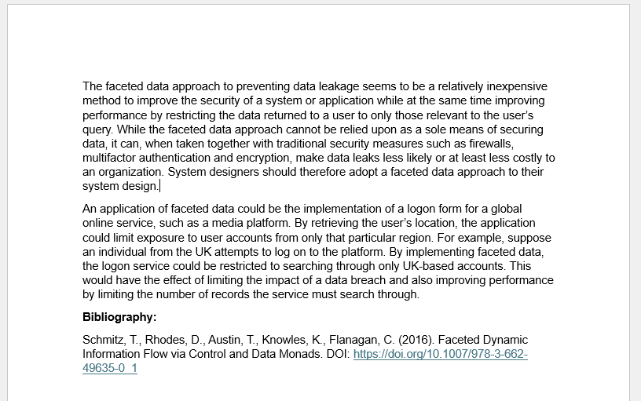
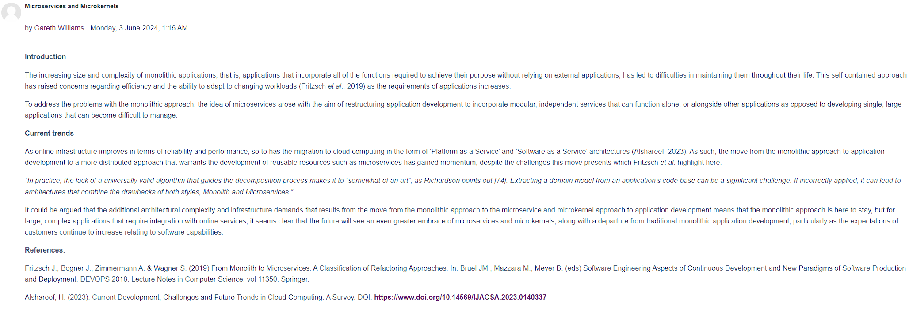

Welcome to Secure Software Development.
Here you will find artefacts and reflections related to the Secure Software Development module.
Unit 1
In this introductory unit, we were asked to review the coding weaknesses identified by the Open Worldwide Application Security Project (OWASP) and select one to discuss with the aid of a UML diagram. My submission is shown below.

Unit 2
In this unit, we devled further into UML, examining its applications in industry, especially regarding the planning phase of the software development cycle.
We were asked to select five terms from International Organization for Standards (ISO)/International Electrotechnical Commission (IEC) Terms and Definitions and submit a blog post discussing how people can be managed to overcome cyber security attacks from the inside, which I have included below.

Unit 3
This unit was concerned with ideas relating to the concept of a secure programming language. To explore this topic, our group was asked to collaborate on a report discussing whether or not a programming language could ever be regarded as secure.
The subtopic I chose to cover was concerned with whether the Python programming language would be more suitable to develop an Operating System in than C. My contribution is show below.

Unit 4
In this unit, we discussed regular expressions, their uses and their vulnerabilities. We were asked to produce a report on Denial of Service involving regular expressions, the problems with regex and how it is used as part of a security solution.

Unit 5
In this unit, we explored the concept of Cyclomatic Complexity and discussed whether it is still relevant today. I've included my response to this question below.

Unit 6
In this unit, we examined the use of linters within Python code testing, exploring how they aid the testing process. Here, we were set the task of running linters against sample code and using the output to help in modifying it to run without errors, which I have included below.
 
Unit 7
Unit 8
This unit was concerned with cryptography and focused on a specific piece of encryption software. To explore the problems that can arise from cryptographic software, we analysed TrueCrypt and discussed its vulnerabilities with the aid of an ontological diagram, as shown below.


Unit 10
In this unit, we explored the concept of faceted data and discussed whether it is a good approach to protecting systems from data leakage. My thoughts on the matter are shown below.

Unit 11
In this unit, we examined the trends in software development and discuss whether microservices and microkernels are likely to the future of applications. My post on this topic is shown below.
